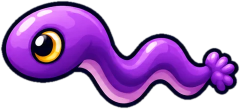

Tap a stage to read its story.
Vyrlet is a small, rubbery purple worm that wriggles through the Lava Crater's cooling ash channels, its round head and single large eye giving it an almost cheerful look despite the toxic fumes. Its simple tube body ripples in neat S-curves, and a faint purple sheen marks its skin as mildly venomous even at this tiny stage. Crater researchers leave it alone - it curls up around warm lava-cracks to sleep and always wakes up more talkative than before.
Field note: Vyrlet uses the same wriggling pattern to greet friends as it does to signal danger - context, it seems, is everything.
Lava Crater. Vyrlet and its family are found in the Lava Crater. See everyone who lives there.
Share a Bond Food that matches its types to become friends. Vyrlet loves:
A Bond Food is not a trick. It joins your spirit with the Kimuro's spirit, and only when it chooses you.
Print the Kimuro adventure packs: mazes, cards, a board game and Bond Mark medals.
See the printable packs